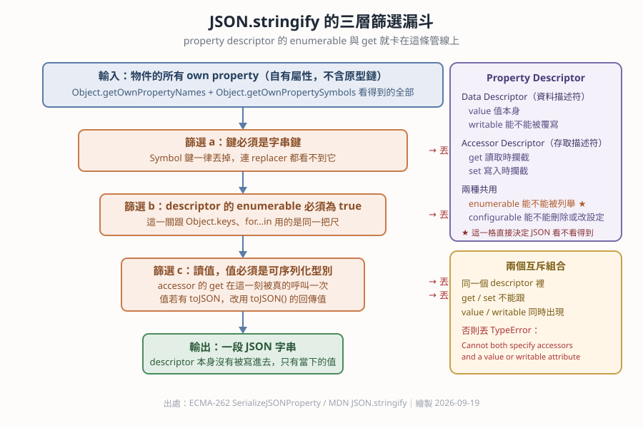
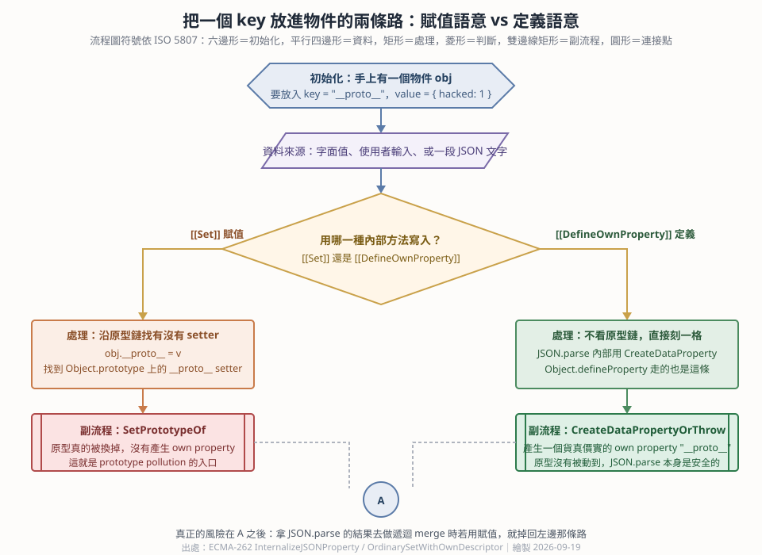

那篇文章講完 strict mode 跟 descriptor 接著講 JSON，不是換話題，是同一章的下一節。 因為這三樣東西是 ？？？ 同一版一起進來的三兄弟。 而且往下挖還有四層實質關聯，不只是時間上的鄰居。
var a = {};
Object.defineProperties(a, {
'name' : { value:'fillano', writable:false, enumerable:false, configurable:false },
'age' : { value:30, writable:true, enumerable:true, configurable:false }
});「我先用物件字面值做一個空物件 a。
接著用 Object.defineProperties（複數，一次定義多個）把兩個屬性刻上去 ——
第一個參數是要被動手腳的物件，第二個參數是一張表，key 是屬性名稱，value 是那個屬性的
descriptor（說明書），而不是值本身。
value 就是這個屬性真正存的值。writable:false 代表不能被覆寫。a.name = 'x' 在非嚴格模式會
？？？，在嚴格模式會丟
？？？。
strict × descriptor 的交集enumerable:false 代表不能被列舉，for...in、Object.keys()、
以及 ？？？ 都看不到它。
descriptor × JSON 的交集configurable:false 代表不能 delete，也不能再改一次它的說明書。所以最後 JSON.stringify(a) 吐出來的是 ？？？，
name 整個不見了 —— 但 a.name 直接讀還是讀得到 'fillano'。
不可列舉不等於讀不到。」
var a = {};
(function(){
var name = 'fillano';
Object.defineProperties(a, {
'name' : {
get: function(){ return name; },
set: function(a) { name = a; },
writable: true, // ← 這一行讓整段丟 TypeError
enumerable: true,
configurable: false
}
});
})();「外面那層 (function(){...})() 叫
？？？，
目的是製造一個外界碰不到的作用域，讓 var name 變成
？？？。
有人讀 a.name 時不是去拿一個固定的值，而是呼叫 get 函式；
有人寫 a.name = 'x' 時改成呼叫 set 函式。」
規格規定 get／set（accessor 組）跟 value／writable（data 組）
互斥，同時給就直接丟：
TypeError: Invalid property descriptor.
Cannot both specify accessors and a value or writable attribute把 writable: true 拿掉才跑得起來。另外原文 setter 的參數也取名 a，
會遮蔽掉外層的物件 a，實務上建議改名。
| 欄位 | 哪一組 | 意思 | 字面值 {} 預設 | defineProperty 沒寫時預設 |
|---|---|---|---|---|
value | Data | 值本身 | 你給的值 | undefined |
writable | Data | 能不能被覆寫 | true | false |
get | Accessor | 讀取時攔截 | 無 | undefined |
set | Accessor | 寫入時攔截 | 無 | undefined |
enumerable ★ | 共用 | 能不能被列舉 | true | false |
configurable | 共用 | 能不能刪除或重設 | true | false |
Object.defineProperty(obj, 'k', { value: 1 }) 建出來的屬性預設是
唯讀、不可列舉、不可刪，跟直覺完全相反。字面值建立則三個開關全開。

ES5 這一版同時塞進：strict mode、property descriptor 全家桶、
內建的 JSON 物件。
ES5 之前瀏覽器沒有內建 JSON，大家的做法是
？？？，
或是引入 Douglas Crockford 寫的 json2.js。
而且這不只是巧合 —— strict mode 收緊 eval，跟 JSON 被內建，是同一個安全動機的一體兩面：
規格一邊讓 eval 變得沒那麼好用，一邊給你一個安全的 JSON.parse 來取代它。
JSON.stringify 的挑選規則只有一條，但三個條件要同時成立：
這跟 Object.keys() 用的是同一把尺，連輸出順序都一樣：
像整數的 key 先照數字升冪，其餘字串 key 照插入順序。
const l = { b:1, 2:1, a:1, 1:1 };
Object.keys(l) // [ '1', '2', 'b', 'a' ]
JSON.stringify(l) // {"1":1,"2":1,"b":1,"a":1}實務用法：把內部狀態設成 enumerable:false，它就同時從 for...in、
Object.keys、以及 API 回傳的 JSON 裡消失。這是隱藏欄位的技巧，不是加密 ——
值還是讀得到，只是不會被列舉。
| 攔截點 | 哪一側 | 什麼時候被呼叫 |
|---|---|---|
get | descriptor | 每次讀這個屬性時 |
set | descriptor | 每次寫這個屬性時 |
toJSON() | JSON | 序列化到這個值時，用回傳值取代它 |
replacer（stringify 第二參數） | JSON | 每個 key/value 出去之前 |
reviver（parse 第二參數） | JSON | 每個 key/value 進來之後 |
兩側會真的碰在一起：JSON.stringify 會真的呼叫 getter，把回傳值寫進 JSON。
反過來，只有 set 沒有 get 的屬性，讀出來是 undefined，
JSON.stringify 直接把整個 key 丟掉。
let 次數 = 0;
const d = {};
Object.defineProperty(d, 'name', {
get(){ 次數++; return 'fillano'; }, enumerable:true
});
JSON.stringify(d) // {"name":"fillano"}
次數 // 1 ← 真的被呼叫了Date 之所以會變成 ISO 字串，就是因為
？？？，
不是 JSON 特別優待 Date。
const f0 = {};
Object.defineProperty(f0, 'age', { value:30, writable:false, enumerable:true, configurable:false });
const f1 = JSON.parse(JSON.stringify(f0));
Object.getOwnPropertyDescriptor(f1, 'age')
// { value:30, writable:true, enumerable:true, configurable:true } ← 設定全被洗掉JSON 還表達不了：函式、undefined、Symbol（整個 key 消失）、
NaN 與 Infinity（變成 ？？？）、
循環參考（丟 TypeError）、原型鏈、getter 本身（只留下當下那一刻的值）。
結論：JSON.parse(JSON.stringify(x)) 不是深拷貝，是「有損壓縮」。
需要深拷貝請用 ？？？。

規格上 JSON.parse 內部用的是 CreateDataProperty（跟 Object.defineProperty 同一條路），
不是 [[Set]] 賦值。差別在 __proto__ 身上會完全看得出來：
JSON.parse('{"__proto__": {"hacked": 1}}')
// → 真的有 own property "__proto__"，原型沒有被換掉
const p = {};
p.__proto__ = { hacked: 1 };
// → 走 Object.prototype 上的 __proto__ setter，原型真的被換掉，own keys 是空的所以 prototype pollution（原型污染）漏洞通常不是出在 JSON.parse 本身，
而是出在拿解析結果去做？？？。
eval 可以用。嚴格模式做的是：eval 裡宣告的變數有自己的作用域不會外漏，且 eval 與 arguments 不能被賦值或當變數名。({x:1, x:2}) 不報錯，結果是 {x:2}。仍然禁止的是函式的重複參數名。this 被自動裝箱替換成 globalThis，嚴格模式下 this 維持 null。差別是「有沒有被換掉」，不是「有沒有報錯」。writable —— 原文第二段範例直接丟 TypeError。.call(null)，就是那篇講的自動裝箱在 this 上的版本，嚴格模式把它關掉了。JSON.stringify（會得到 {}），原因正是本篇第三層說的「只序列化 own enumerable 字串鍵」。JSON.stringify 的挑選規則同源。Object.keys 直球練習，正好驗證「不可列舉屬性不算數」。valueOf 與 toString，跟 toJSON 是同一類攔截點。call，把 this 綁定規則練一遍。